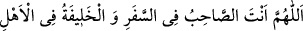
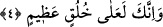

gelecek olan imdâdı kesmektedir.
Denilmiştir ki: Peygamber Efendimiz (s.a.)’in ecri, tıpkı ümmetin ecri gibidir.
Ümmetin ecri de kesin olarak eksilmeyecektir. Âyet-i kerîmenin mânâsı yukarda olduğu
üzere “bitip tükenmeyen bir mükâfât” şeklinde olabileceği gibi, “senin başına kakılmak
sûretiyle bulanmamış bir nimet” şeklinde olması da mümkündür. Çünkü sana verilecek
olan mükâfât, amelinden dolayı senin alacak olduğun sevaptır. Yoksa daha ilk baştan,
bir amele karşılık olmaksızın sana verilecek olan ihsan değildir. Çünkü Keşşaf’ta da
ifâde edildiği üzere, ameller üzerine tamamlanacak olan ecirler yâni sevaplar değil
fazîletlerdir.
Kâşifî demiştir ki; minnet koymadan; yâni Hak Teâlâ, arada olduğunda minnet
edilmesi gereken bir aracı koymaksızın sana lütuf ve ihsanda bulunur.
Burada mükâşefât ve müşâhedât nurlarının sermedî oldukları için asla
kesilmeyeceklerine işâret vardır. Ârif olan kişi her yerde şühûd mertebesinde
yükselmeye devam edecektir ve bu şühûd asla kesilmeyecektir. Çünkü bu fetih ve feyz,
başkasının değil ancak ve ancak Allah’ın katından gelmektedir. Kullarına ihsanda
bulunan Allah’tır. Yoksa kulların bâzıları bâzılarına ihsanda bulunuyor değildir.
Bâzı âlimlere göre Peygamber Efendimiz (s.a.)’in erecek olduğu mükâfât, şefâatinin
kabulü mükâfâtıdır. Onun şefâati ümmetinden büyük günah işlemiş kimselere karşı kesik
olmayacaktır. Allah Peygamber Efendimiz’in, bütün ümmetinin hiç bir azap ve azarlama
olmaksızın bağışlanacağı yolundaki ümidini boşa çıkarmaz.
Fakir (Bursevi)’ye göre Peygamber Efendimiz’in erecek olduğu mükâfât, Allah
Teâlâ’dır. Çünkü O, Peygamber Efendimiz’in mâsivaya yâni Allah’tan başkasına yüz
çevirmesine karşılık bir bedel mâhiyetindedir. Bu nedenle Peygamber Efendimiz’in
dilinden şu duâ dökülmüştür:
“Allah’ım sen yolculukta dostum ve âile fertlerim içerisinde vekilimsin.” [26] Allah
nimet verendir; nimetten kesilmiş, nimetten mahrûm olan değildir. Peygamber
Efendimiz’in bu makamına Hz. Ebû Bekir (r.a.)’in şu sözü işâret etmektedir. Peygamber
Efendimiz kendisine; “Ey Ebû Bekir, âile fertlerine ne bıraktın?” dediğinde, “Âile
fertlerime Allah’ı ve O’nun rasûlünü bıraktım” demiştir.[27] Şu hâlde Yüce Allah, fânî
olan bir insan için onun nefsinden, çocuğundan ve malından daha önemlidir. Zira Allah
Teâlâ’nın rızâsı en büyük mükâfâttır.
4. Ve sen elbette yüce bir ahlâk üzeresin.